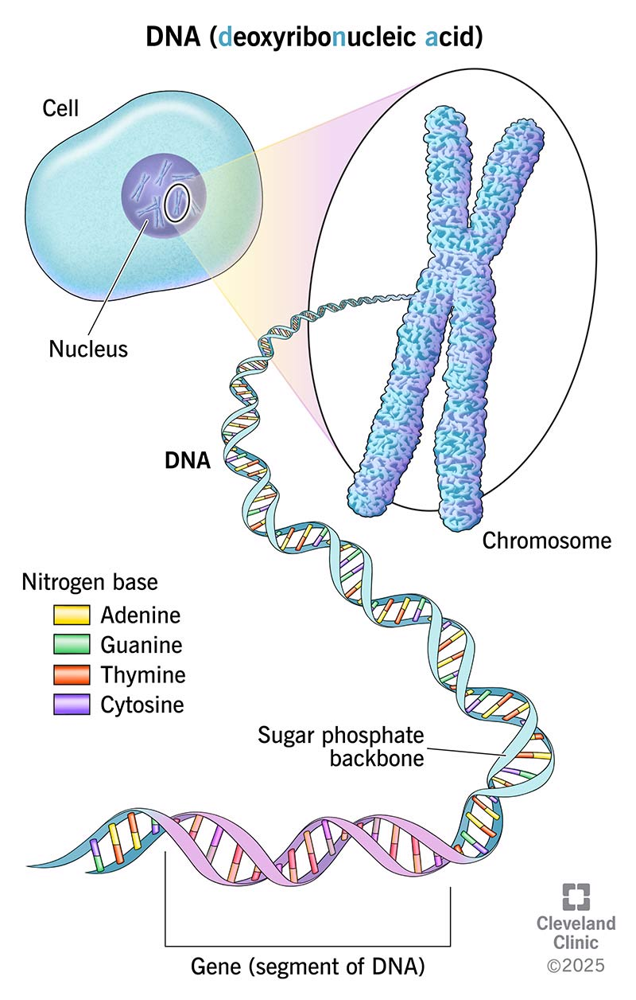
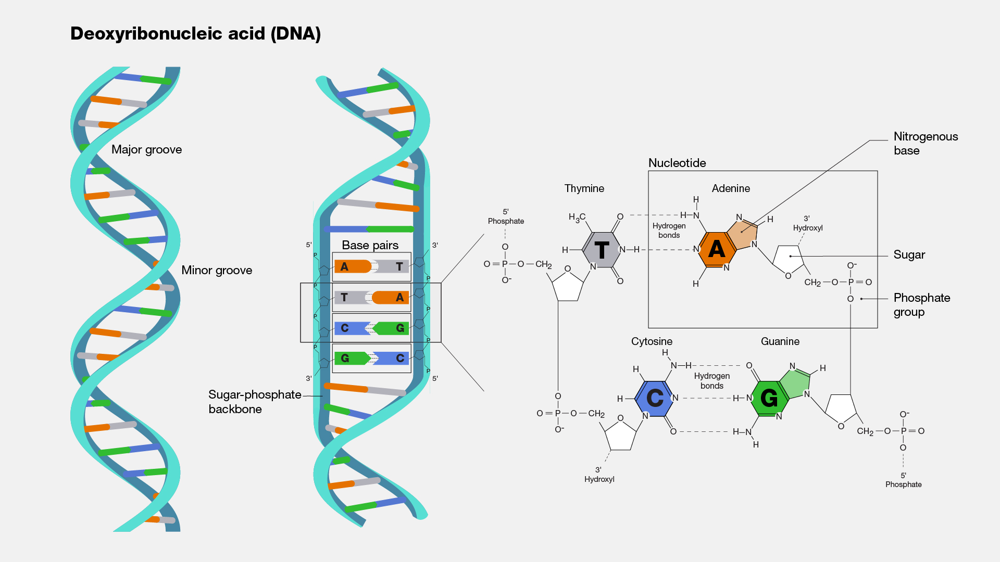

DNA – Cuốn sách bạn mang theo từ khi chưa kịp chào đời
Liệu.............
Bạn đã bao giờ soi gương rồi bất chợt nhận ra đôi mắt mình giống hệt bố, hay nụ cười lại y chang mẹ chưa? Điều đó không phải trùng hợp. Đằng sau những nét quen thuộc ấy là DNA - thứ có thể xem như bản hướng dẫn sinh học đã được viết sẵn từ trước khi bạn sinh ra.
DNA giống một cuốn sách khổng lồ, được tạo nên từ bốn “chữ cái” A, T, C và G. Trong cuốn sách đó có gần như toàn bộ thông tin quyết định cơ thể bạn phát triển ra sao: màu tóc, chiều cao, khả năng chuyển hóa năng lượng, thậm chí cả nguy cơ mắc một số bệnh. Khi một con người hình thành, bố và mẹ mỗi người đóng góp một nửa bộ gene, tạo nên phiên bản duy nhất - chính là bạn.
Tuy nhiên, gene không được sao chép theo kiểu sao y bản chính. Khi tế bào chuẩn bị phân chia, DNA tự nhân đôi theo cơ chế bán bảo toàn: mỗi phân tử mới giữ lại một nửa sợi cũ và tổng hợp thêm một sợi mới. Nhờ vậy, thông tin di truyền được truyền đi gần như chính xác qua hàng tỷ lần phân chia tế bào.
Thí nghiệm nổi tiếng của Meselson và Stahl (1958) đã chứng minh cơ chế này khi họ nuôi vi khuẩn E.coli trong môi trường chứa nitơ nặng rồi chuyển sang nitơ nhẹ. Kết quả thu được DNA mang mật độ “lai” - bằng chứng cho thấy mỗi thế hệ DNA đều giữ lại dấu vết của thế hệ trước. Nói đơn giản hơn: ngay từ cấp độ phân tử, chúng ta luôn mang theo một phần của bố mẹ mình.

